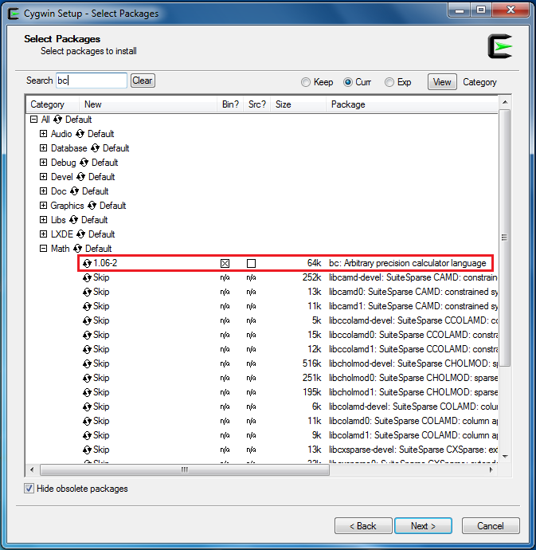
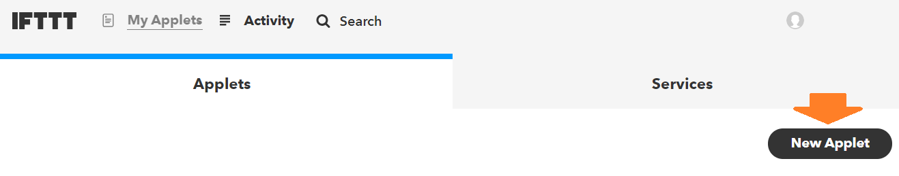
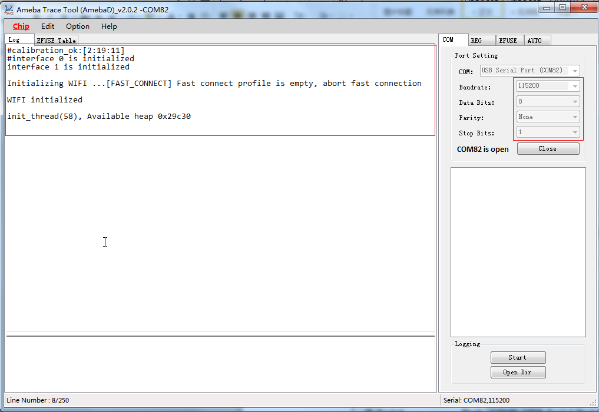
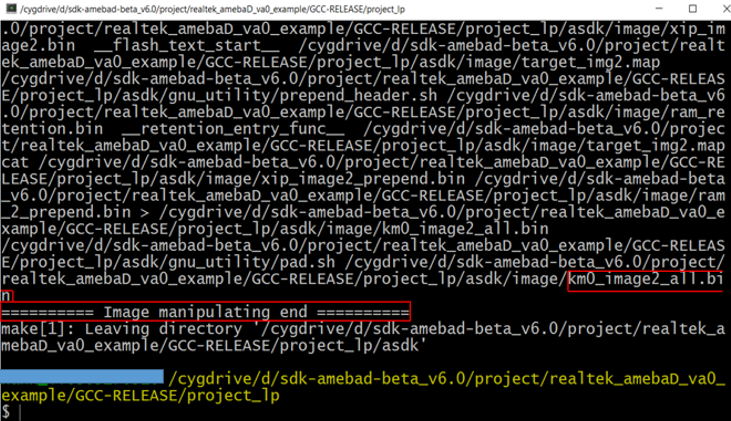
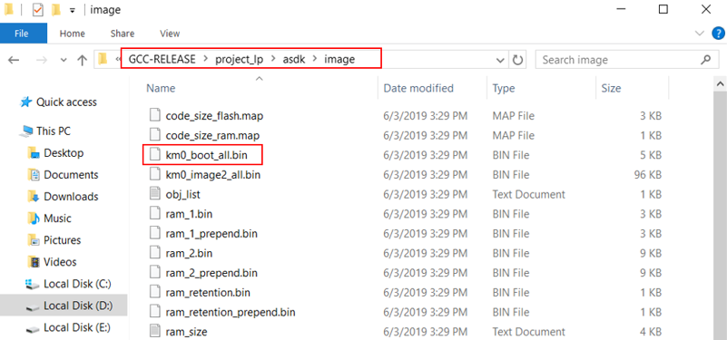
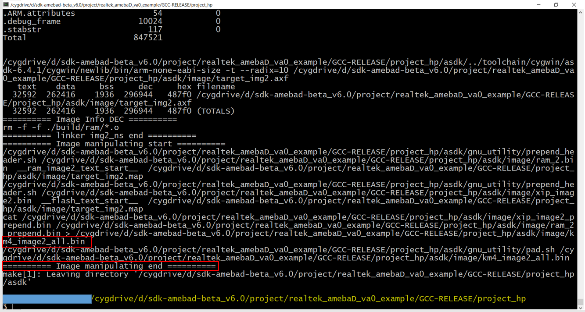

Getting Started with RTL8722DM_mini¶
Required Environment
AmebaD RTL8722DM_mini currently supports Windows XP/7/8/10 32-bits and 64-bits, Linux and Mac operating systems. In this documentation, please use Arduino IDE with version 1.8.12 or later.
Introduction to AmebaD RTL8722DM_mini
Ameba is an easy-to-program platform for developing all kind of IoT applications. AmebaD is equipped with various peripheral interfaces, including WiFi, GPIO INT, I2C, UART, SPI, PWM, ADC. Through these interfaces, AmebaD can connect with electronic components such as LED, switches, manometer, hygrometer, PM2.5 dust sensors, …etc.
The collected data can be uploaded via WiFi and be utilized by applications on smart devices to realize IoT implementation.

RTL8722DM_mini has smaller size than Arduino Uno, as shown in the above figure.
{kind=link}
RTL8722DM_mini uses Micro USB to supply power, which is common in many smart devices.
Please refer to the following figure and table for the pin diagram and function of RTL8722DM_mini.
{kind=link}
PIN name |
GPIO INT |
ADC |
PWM |
UART |
SPI |
I2C |
|
|---|---|---|---|---|---|---|---|
D0 |
GPIOB_0 |
✓ |
I2C0 SDA |
||||
D1 |
GPIOB_1 |
✓ |
A0 |
Serial2_TX |
|||
D2 |
GPIOB_2 |
✓ |
A1 |
Serial2_RX |
|||
D3 |
GPIOB_3 |
✓ |
A2 |
||||
D4 |
GPIOB_4 |
✓ |
A3 |
✓ |
|||
D5 |
GPIOB_5 |
✓ |
A4 |
✓ |
I2C0 SCL |
||
D6 |
GPIOB_6 |
✓ |
A5 |
I2C0 SDA |
|||
D7 |
GPIOB_7 |
✓ |
A6 |
✓ |
|||
D8 |
GPIOA_2 |
✓ |
|||||
D9 |
GPIOA_12 |
✓ |
✓ |
Serial2_TX |
SPI1_MOSI |
||
D10 |
GPIOA_13 |
✓ |
✓ |
Serial2_RX |
SPI1_MISO |
||
D11 |
GPIOA_14 |
✓ |
SPI1_CLK |
||||
D12 |
GPIOA_15 |
✓ |
SPI1_CS |
||||
D13 |
GPIOA_16 |
✓ |
|||||
D14 |
GPIOA_28 |
✓ |
✓ |
||||
D15 |
GPIOA_18 |
✓ |
Serial1_TX |
||||
D16 |
GPIOA_19 |
✓ |
Serial1_RX |
||||
D17 |
GPIOA_30 |
✓ |
✓ |
||||
D18 |
GPIOA_21 |
✓ |
Serial1_TX |
||||
D19 |
GPIOA_22 |
✓ |
Serial1_RX |
||||
D20 |
GPIOA_23 |
✓ |
✓ |
||||
D21 |
GPIOA_24 |
✓ |
✓ |
||||
D22 |
GPIOA_31 |
✓ |
I2C0 SCL |
Setting up Development Environment
Step 1. Installing the Driver
First, connect RTL8722DM_mini to the computer via Micro USB (same as power):
If this is the first time you connect RTL8722DM_mini to your computer, the USB driver for RTL8722DM_mini will be automatic installed.
You can check the COM port number in Device Manager of your computer:
{kind=link}
Step 2. Set up Arduino IDE
From version 1.6.5, Arduino IDE supports third-party hardware. Therefore, we can use Arduino IDE to develop applications on RTL8722DM_mini, and the examples of Arduino can run on RTL8722DM_mini too. Refer to following table,
Category |
Name |
Comment |
Remarks |
|---|---|---|---|
|
An alogReadSerial |
Connect potentiometer. Reading voltage range 0 to 3.3V. |
ADC pin options A0, A1, A2, A3, A4, A5 and A6. |
BareMinimum |
|||
Blink |
Onboard LEDs options LED_B and LED_G. (blue and green) |
||
Dig italReadSerial |
Onboard button PUSH_BTN. |
||
Fade |
Replace “led = 9;” by a PWM pin (D4, D5, D7, D12, D13, D14, D17, D20, or D21). e.g. “led = 4;” |
* * |
|
Rea dAnalogVoltage |
ADC can read a maximum of 3.3V. |
* * |
|
|
Bli nkWithoutDelay |
The onboard blue LED (LED_B) has been used. |
Onboard LEDs options LED_G. |
Button |
Onboard LEDs options LED_B and LED_G. Onboard button PUSH_BTN. |
||
Debounce |
Onboard LEDs options LED_B and LED_G. Onboard button PUSH_BTN. |
||
Digi talInputPullup |
Onboard LEDs options LED_B and LED_G. |
||
StateC hangeDetection |
Onboard LEDs options LED_B and LED_G. Onboard button PUSH_BTN. |
||
toneKeyboard |
Replace “tone(8, note s[thisSensor], 20);” by a PWM pin (D4, D5, D7, D12, D13, D14, D17, D20, or D21). e.g. “tone(21, note s[thisSensor], 20);” |
||
toneMelody |
|||
toneMultiple |
|||
ton ePitchFollower |
|||
|
Ana logInOutSerial |
Replace “const int analogOutPin = 9;” by a PWM pin (D4, D5, D7, D12, D13, D14, D17, D20, or D21). e.g. “const int analogOutPin = 4;” |
|
AnalogInput |
Onboard LEDs options LED_B and LED_G. |
||
Analog Write Mega |
|||
Calibration |
Replace “ledPin = 9;” by a PWM pin (D4, D5, D7, D12, D13, D14, D17, D20, or D21). e.g. “ledPin = 4;” |
Onboard LEDs options LED_B and LED_G. Onboard button PUSH_BTN. |
|
Fading |
|||
Smoothing |
|||
04. Communication |
ASCIITable |
||
Dimmer |
Replace “ledPin = 9;” by a PWM pin (D4, D5, D7, D12, D13, D14, D17, D20, or D21). e.g. “ledPin = 4;” |
||
Graph |
Connect potentiometer. Reading voltage range 0 to 3.3V. |
ADC pin options A0, A1, A2, A3, A4, A5 and A6. |
|
Midi |
Please use Serial1 and pin 26, or use Serial2 and pin 17 |
||
MultiSerial |
|||
PhysicalPixel |
Onboard LEDs options LED_B and LED_G. |
||
R eadASCIIString |
Use PWM pin for LED (D4, D5, D7, D12, D13, D14, D17, D20, or D21). |
||
Seri alCallResponse |
|||
SerialCal lResponseASCII |
|||
SerialEvent |
|||
Ser ialPassthrough |
|||
Vir tualColorMixer |
ADC pin options A0, A1, A2, A3, A4, A5 and A6. |
||
|
Arrays |
||
Fo rLoopIteration |
|||
IfStatem entConditional |
ADC pin options A0, A1, A2, A3, A4, A5 and A6. Onboard LEDs options LED_B and LED_G. |
||
switchCase |
|||
switchCase2 |
|||
WhileStatem entConditional |
Replace “ledPin = 9;” by a PWM pin (D4, D5, D7, D12, D13, D14, D17, D20, or D21). e.g. “ledPin = 4;” |
ADC pin options A0, A1, A2, A3, A4, A5 and A6. |
|
|
barGraph |
ADC pin options A0, A1, A2, A3, A4, A5 and A6. Onboard LEDs options LED_B and LED_G. |
|
Row ColumnScanning |
ADC pin options A0, A1, A2, A3, A4, A5 and A6. |
||
|
Cha racterAnalysis |
||
StringAd ditionOperator |
|||
String AppendOperator |
|||
Str ingCaseChanges |
|||
St ringCharacters |
|||
StringCompa risonOperators |
ADC pin options A0, A1, A2, A3, A4, A5 and A6. |
||
StringIndexOf |
|||
StringLength |
|||
St ringLengthTrim |
|||
StringReplace |
|||
StringStar tsWithEndsWith |
|||
S tringSubstring |
|||
StringToInt |
When the installation is finished, open Arduino IDE. To set up RTL8722DM_mini correctly in Arduino IDE, go to “File” -> “Preferences”.
{kind=link}
And paste the following URL into “Additional Boards Manager URLs” field:
Next, go to “Tools” -> “Board” -> “Boards Manager”:
{kind=link}
The “Boards Manager” requires about 10~20 seconds to refresh all hardware files (if the network is in bad condition, it may take longer). Every time the new hardware is connected, we need to reopen the Board Manager. So, we close the Boards Manager, and then open it again. Find “Realtek AmebaD Boards (32-bits ARM Cortex-M4 @200MHz)” in the list, click “Install”, then the Arduino IDE starts to download required files for AmebaD.
{kind=link}
Finally, we select AmebaD as current connected board in “tools” -> “Board” -> “Ameba ARM (32-bits) Boards” ->” RTL8722DM_mini”：

Try the First Example
Step 1. Compile & Upload
{kind=link}
Arduino IDE opens a new window with the complete sample code.

There are onboard LED of TRL8722DM_mini, the default “LED_BUILTIN” is blue onboard LE.D
Change “LED_BUILTIN” to “LED_B” or “LED_G” for different colour. Onboard LEDs options LED_B and LED_G. (blue and green).

Next, we compile the sample code directly; click “Sketch” -> “Verify/Compile”

Arduino IDE prints the compiling messages in the bottom area of the IDE window. When the compilation is finished, you will get the message similar to the following figure:

Afterwards, we will upload the compiled code to RTL8722DM_mini.
Please make sure RTL8722DM_mini is connected to your computer, then click “Sketch” -> “Upload”.
The Arduino IDE will compile first then upload. During the uploading process, users are required to enter the upload mode of the board. Arduino IDE will wait 5s for DEV board to enter the upload mode.

To enter the upload mode, first press and hold the UART_DOWNLOAD button, then press the RESET button. If success, you should see the onboard green LED and blue LED all turned off.

Again, during the uploading procedure the IDE prints messages. Uploading procedure takes considerably longer time (about 30 seconds to 1 minute). When upload completed, the “Done uploading” message is printed.
Step 2.Run the Blink example
In short, for RTL8722DM_mini, the example can be run on both onboard LEDs (green or blue) or external LED (use any GPIO pins for signal output).
Finally, press the RESET button, and you can see the LED blinking.
If you encounter any problem, please refer to Troubleshooting.